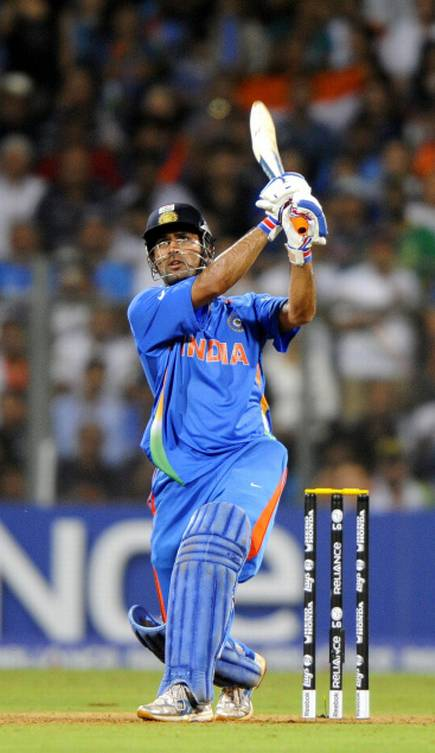

WeTribute.comA Tribute to our
Heroes
M.S. Dhoni
The Man who made the dream come true
Here's a time line of M.S. Dhoni:
- August 7, 2007 - Dhoni is named as India captain for the 2007 ICC World T20 after senior stars pull out of the competition.
- September 19, 2007 - Dhoni is named captain of the Indian ODI team after Rahul Dravid resigns.
- September 24, 2007 - Dhoni leads India to World T20 glory after beating Pakistan by five runs in the final.
- March 4, 2008 - Under the captaincy of Dhoni, India win a historic ODI series in Australia for the first time ever.
- April 9, 2009 - Dhoni leads India to their first Test series victory in New Zealand in 41 years.
- December 6, 2009 - India reach the pinnacle of Test cricket as Dhoni guides his men to the number one spot on the ICC Test Rankings.
- June 24, 2010 - India win the Asia Cup for the first time in 15 years after beating Sri Lanka by 81 runs in the final.
- April 2, 2011 - A day no Indian fan will forget! Dhoni is named Man of the Match in the final as India win the World Cup on home soil. The Indian skipper scored an unbeaten 91 from 79 balls as the Men in Blue chased down a target of 275.
- August 22, 2011 - Dhoni suffers his first series loss as Test captain as England humiliate India 4-0 in a four-match Test series.
- December 17, 2012 - More pressure mounts on Dhoni's position as Test skipper as India lose a Test series at home for the first time in eight years.
- June 23, 2013 - Dhoni completes a clean sweep of ICC trophies as captain, after India beat England by five runs in a rain-reduced game in the ICC Champions Trophy final.
- April 6, 2014 - India reach the World T20 final for the second time under Dhoni, but lose to Sri Lanka in the decider.
- January 4, 2017 - Dhoni resigns as captain of the ODI and T20I teams.
If you have time, you should read more about this incredible human being on his Wikipedia entry